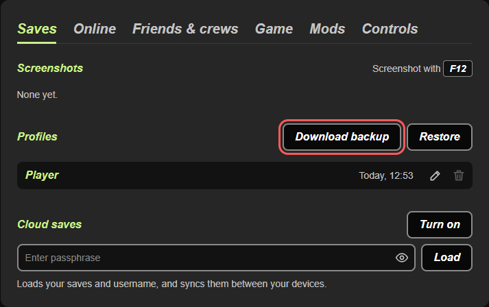
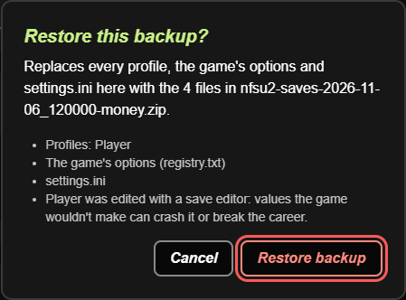

nfsu2.xyz Money Editor
Fan tool for nfsu2.xyz. Not made by the nfsu2.xyz team.
Change your money
Open your save backup from nfsu2.xyz, set the money and download a new backup. This tool is made only for nfsu2.xyz and does not work with other versions of the game. First time here? Read how to use it.
How to use it
-
Save your game
In the game, press Esc or Start and go to Garage > Save. Then close the game to get back to the nfsu2.xyz page.
-
Download a backup
On nfsu2.xyz, open the Saves tab. Under Profiles, click Download backup. Keep this file. It is your copy of the old save.
Show picture

-
Change the money
Choose the backup in the box on this page. Set the new money and click Download new backup. You get a new file with
-moneyat the end of the name. -
Restore the new backup
On nfsu2.xyz, open the Saves tab and click Restore. Choose the
-money.zipfile, then click Restore backup.The window says your profile "was edited with a save editor". This is normal for every backup this tool changes. Changed values can crash the game or break the career, so keep the money at a sensible amount.
Show picture

-
Play
Press Play and load your profile. You should see the new money.
Something went wrong? On the Saves tab, click Restore and choose your old backup from step 2. If you use cloud saves, click Sync now after the restore and choose Keep this browser's if nfsu2.xyz asks which saves to keep.